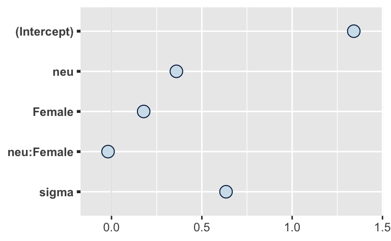
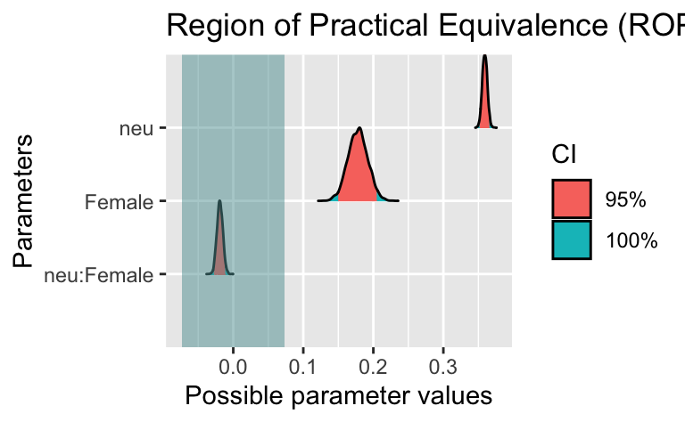

osf_d_path <- "https://osf.io/cjxua/?action=download"
d <- read_csv(osf_d_path)rope4
rope
bayes
Exercise
Einer der (bisher) größten Studien der Untersuchung psychologischer Konsequenzen (oder Korrelate) der Covid-Zeit ist die Studie COVIDiStress.
Im Folgenden sollen Sie folgende Forschungsfrage untersuchen:
Forschungsfrage:
Ist der Unterschied zwischen Männern und Frauen (Dem_gender) im Hinblick zum Zusammenhang von Stress (PSS10_avg, AV) und Neurotizismus (neu, UV) vernachlässigbar klein?
Den Datensatz können Sie so herunterladen (Achtung, groß):
Hinweise:
- Sie benötigen einen Computer, um diese Aufgabe zu lösen.
- Verwenden Sie die statistischen Methoden, die im Unterricht behandelt wurden.
- Verwenden Sie Ansätze aus der Bayes-Statistik zur Lösung dieser Aufgabe.
- Bei der Variable für Geschlecht können Sie sich auf Fälle begrenzen, die Männer und Frauen umfassen.
- Wandeln Sie die die Variable für Geschlecht in eine binäre Variable - also Werte mit 0 und 1 - um.
- Alle Daten (und weitere Informationen) zum Projekt sind hier abgelegt.
- Eine Beschreibung der Variablen der Studie finden Sie hier.
- Fixieren Sie die Zufallszahlen auf den Startwert 42.
Antwortoptionen:
Answerlist
- Ja
- Nein
- Die Daten sind nicht konkludent; es ist keine Entscheidung möglich.
- Auf Basis der bereitgestellten Informationen ist keine Entscheidung möglich.
Solution
Pakete laden:
library(tidyverse)
library(rstanarm)
library(easystats)Relevante Spalten auswählen:
d2 <-
d %>%
select(PSS10_avg, neu, Dem_gender)Das sind die Variablen:
- Stress
- Neurotizismus
- Geschlecht
Deskriptive Statistiken zum Datensatz:
d2 %>%
describe_distribution()| Variable | Mean | SD | IQR | Min | Max | Skewness | Kurtosis | n | n_Missing |
|---|---|---|---|---|---|---|---|---|---|
| PSS10_avg | 2.631202 | 0.735594 | 1.000000 | 1 | 5 | 0.2083341 | -0.3101913 | 116097 | 9209 |
| neu | 3.339708 | 1.053727 | 1.333333 | 1 | 6 | 0.0704146 | -0.4525880 | 108367 | 16939 |
d2 %>%
count(Dem_gender)| Dem_gender | n |
|---|---|
| Female | 90400 |
| Male | 33126 |
| Other/would rather not say | 1474 |
| NA | 306 |
Datensatz aufbereiten:
d3 <-
d2 %>%
filter(Dem_gender %in% c("Female", "Male")) %>%
drop_na() %>%
mutate(Female = ifelse(Dem_gender == "Female", 1, 0)) %>%
select(-Dem_gender)Check:
d3 %>%
count(Female)| Female | n |
|---|---|
| 0 | 28371 |
| 1 | 78472 |
Check:
d3 %>%
describe_distribution()| Variable | Mean | SD | IQR | Min | Max | Skewness | Kurtosis | n | n_Missing |
|---|---|---|---|---|---|---|---|---|---|
| PSS10_avg | 2.6223511 | 0.7351792 | 1.000000 | 1 | 5 | 0.2150741 | -0.3202387 | 106843 | 0 |
| neu | 3.3364594 | 1.0524872 | 1.333333 | 1 | 6 | 0.0703479 | -0.4524212 | 106843 | 0 |
| Female | 0.7344608 | 0.4416219 | 1.000000 | 0 | 1 | -1.0618369 | -0.8725188 | 106843 | 0 |
Modell berechnen:
m1 <-
stan_glm(PSS10_avg ~ neu + Female + neu:Female,
refresh = 0,
seed = 42,
data = d3)Modellkoeffizienten auslesen:
coef(m1)(Intercept) neu Female neu:Female
1.34114221 0.35917641 0.17807121 -0.01910496 Posteriori-Verteilung auslesen:
parameters(m1)| Parameter | Median | CI | CI_low | CI_high | pd | Rhat | ESS | Prior_Distribution | Prior_Location | Prior_Scale |
|---|---|---|---|---|---|---|---|---|---|---|
| (Intercept) | 1.3411422 | 0.95 | 1.3175222 | 1.3641160 | 1 | 1.001274 | 1139.6816 | normal | 2.622351 | 1.837948 |
| neu | 0.3591764 | 0.95 | 0.3522757 | 0.3662896 | 1 | 1.001854 | 1146.7115 | normal | 0.000000 | 1.746290 |
| Female | 0.1780712 | 0.95 | 0.1504310 | 0.2054727 | 1 | 1.002058 | 984.2769 | normal | 0.000000 | 4.161813 |
| neu:Female | -0.0191050 | 0.95 | -0.0270895 | -0.0109118 | 1 | 1.002839 | 982.9762 | normal | 0.000000 | 1.048027 |
Posteriori-Verteilung plotten:
plot(m1)
Rope berechnen:
rope(m1)| Parameter | CI | ROPE_low | ROPE_high | ROPE_Percentage | Effects | Component | |
|---|---|---|---|---|---|---|---|
| 1 | (Intercept) | 0.95 | -0.0735179 | 0.0735179 | 0 | fixed | conditional |
| 3 | neu | 0.95 | -0.0735179 | 0.0735179 | 0 | fixed | conditional |
| 2 | Female | 0.95 | -0.0735179 | 0.0735179 | 0 | fixed | conditional |
| 4 | neu:Female | 0.95 | -0.0735179 | 0.0735179 | 1 | fixed | conditional |
Rope visualisieren:
plot(rope(m1))
Answerlist
- Falsch
- Wahr
- Falsch
- Falsch
Categories:
- rope
- bayes